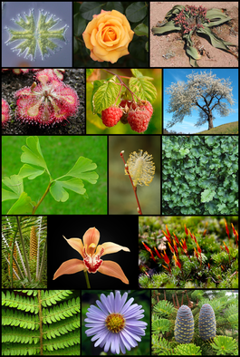

Расте́ния (лат. Plantae, или Vegetabilia) — биологическое царство, одна из основных групп многоклеточных организмов, включающая в себя в том числе мхи, папоротники, хвощи, плауны, голосеменные и цветковые растения. Нередко к растениям относят также все водоросли или некоторые их группы. Растения (в первую очередь, цветковые) представлены многочисленными жизненными формами — среди них есть деревья, кустарники, травы и др. Растения являются объектом исследования науки ботаники.